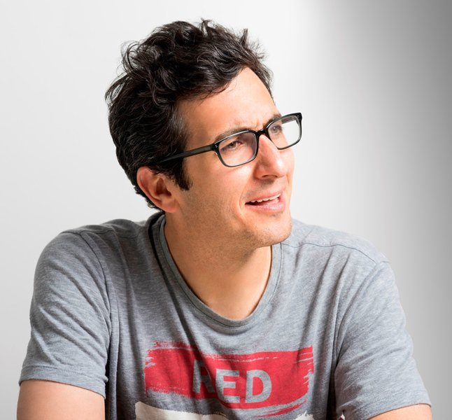
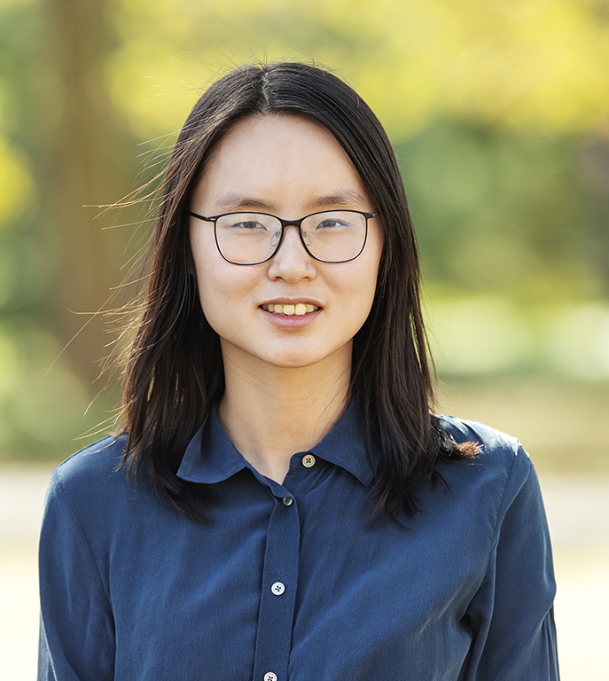
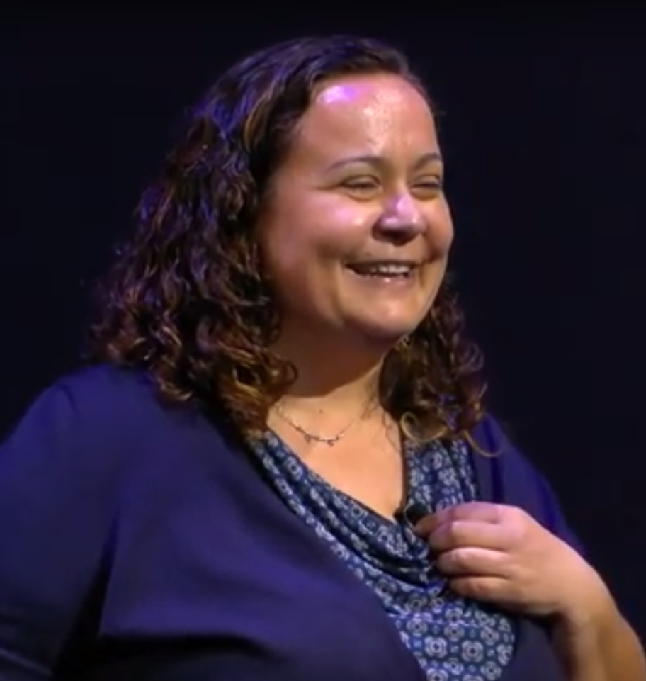
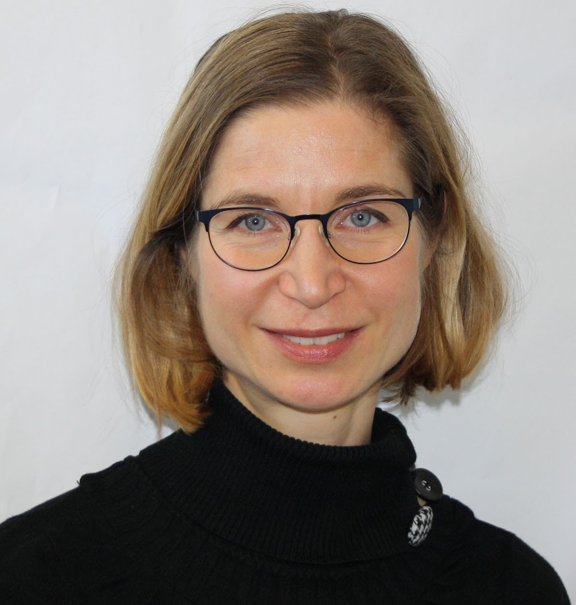
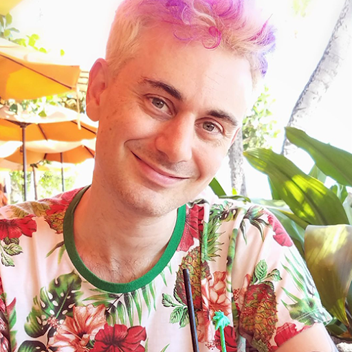

Overview
Welcome to 1st DialDoc Workshop at ACL-IJCNLP 2021!
Goal-oriented conversational systems can unlock a vast amount of information in the associated documents, in which written and visual content dominate the way that individuals and organizations choose to present their interests and knowledge to the world. We posit that one scalable way to create personalized conversational systems is to have them arise directly from such content. There are significant individual research threads that show promises in handling heterogeneous knowledge embedded in the documents, including (1) unstructured content such as text passages (CoQA, QuAC, ShARC, DoQA); (2) semi-structured content such as tables or lists (SQA, HybridQA); (3) multimedia such as images and videos with associated textual descriptions (RecipeQA, PsTuts-VQA); (4) or structured data specified by schema such as RDFa or Microdata in the webpages. The purpose of this workshop on Document-grounded Dialogue and Conversational QA is to invite researchers to bring their individual perspectives on the subject, and to advance the field in joint effort by providing a shared task and competition.
Invited Speakers
|  |  |  |  |
| Jonathan Berant Tel-Aviv University |
Danqi Chen Princeton University |
Dilek Hakkani-Tur
Amazon Alexa AI) . |
Verena Rieser Heriot-Watt University |
|  |  |
||
| Jason Weston Facebook AI Research |
William Wang Yang University of California, Santa Barbara |
Scott (Wen-tau) Yih Facebook AI Research |
Program
August 5, 2021, Thursday, 8:00 - 17:40 EDT
- 08:00–08:05 | Opening remarks
- 08:05–08:40 | Invited Talk 1: Jonathan Berant
- 08:40–09:15 | Invited Talk 2: Verena Rieser
- 09:15–10:05 | Paper lightning talk I
- 10:05–10:30 | Break
- 10:30–11:05 | Invited Talk 3: Jason Weston
- 11:05-11:30 | Shared task results
- 11:30-12:30 | Poster session I
- 12:30-13:30 | Lunch break
- 13:30–14:05 | Invited talk 4: Danqi Chen
- 14:05–14:55 | Paper lightning talk II
- 14:55–15:30 | Invited talk 5: Dilek Hakkani-Tur
- 15:30–16:30 | Poster session II
- 16:30-17:05 | Invited talk 6: William Wang Yang
- 17:05–17:40 | Invited talk 7: Scott (Wen-tau) Yih